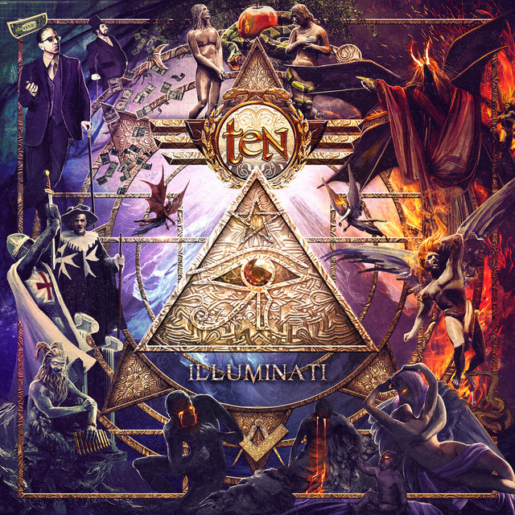
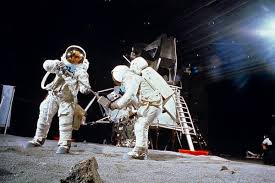
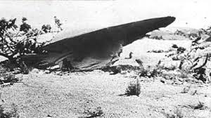
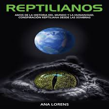
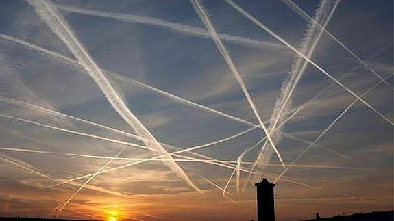
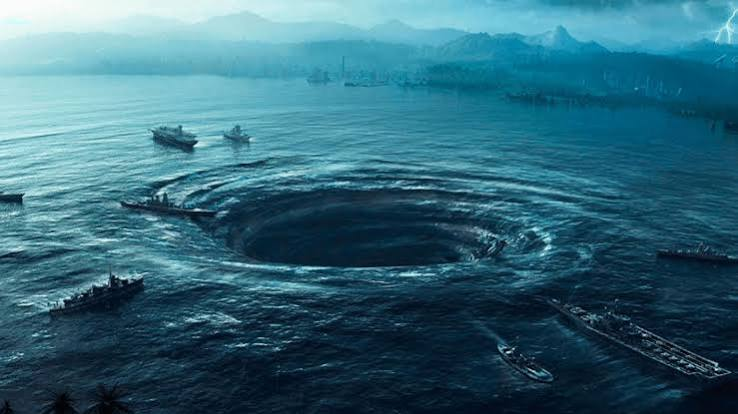
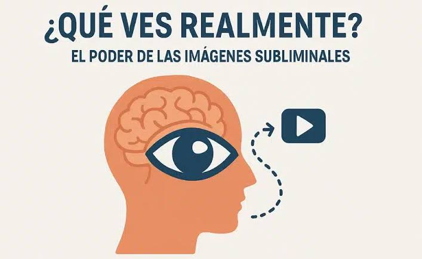
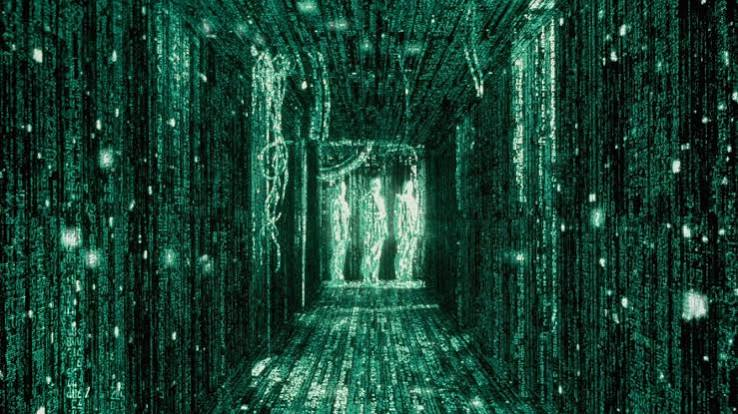
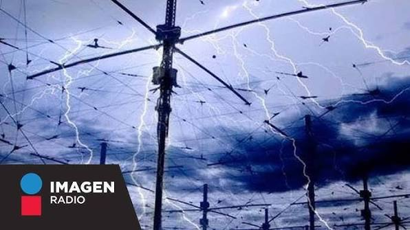

- Los Illuminati - Supuesta organizacion secreta que controla gobiernos y economia.
- Area 51 - Base militar relacionada con tecnologia extraterrestre.
- El alunizaje falso - Afirma que la llegada a la Luna fue grabada en un estudio.
- Reptilianos - Seres que adoptan forma humana para controlar el mundo.
- Nuevo Orden Mundial - Plan para establecer un gobierno global.
- Asesinato de JFK - Teorias sobre autores ocultos detras del crimen.
- Proyecto MK Ultra - Experimentos secretos de control mental.
- Chemtrails - Estelas de aviones usadas para modificar el clima o controlar poblaciones.
- La Tierra Hueca - Existencia de civilizaciones dentro del planeta.
- Extraterrestres en Roswell - Supuesto accidente de una nave alienigena.
- Internet Muerto - Afirma que gran parte del contenido en linea es generado por bots e inteligencia artificial.
- Triangulo de las Bermudas - Zona donde supuestamente desaparecen barcos y aviones por causas misteriosas.
- Mensajes Subliminales - Uso de mensajes ocultos para influir en pensamientos y comportamientos.
- La Realidad es una Simulacion - Propone que el universo funciona como una simulacion creada artificialmente.
- Proyecto HAARP - Supuesta tecnologia capaz de controlar el clima y provocar desastres naturales.
1. Los Illuminati
La teoria de los Illuminati afirma que existe una organizacion secreta que controla gobiernos, bancos, medios de comunicacion y grandes empresas. Segun los creyentes, este grupo influye en decisiones importantes a nivel mundial para obtener poder y mantener el control de la sociedad.
La teoria se origino a partir de una sociedad real llamada Illuminati de Baviera, fundada en 1776 por Adam Weishaupt. Aunque la organizacion fue disuelta pocos años despues, con el tiempo surgieron rumores de que continuo operando en secreto.
2. Area 51
El Area 51 es una base militar ubicada en Nevada, Estados Unidos. Durante decadas fue un lugar altamente secreto, lo que genero numerosas especulaciones sobre sus actividades.
Algunas teorias sostienen que en sus instalaciones se almacenan restos de naves extraterrestres y que se realizan investigaciones sobre tecnologia alienigena. Sin embargo, las autoridades han indicado que la base se utilizaba principalmente para pruebas de aeronaves experimentales.
3. El alunizaje falso
Esta teoria sostiene que la llegada del ser humano a la Luna en 1969 fue una representacion grabada en un estudio cinematografico y transmitida al mundo como si hubiera ocurrido realmente.
Los defensores de esta teoria mencionan supuestas irregularidades en las fotografias y videos de las misiones Apollo. Sin embargo, cientificos e ingenieros han presentado abundante evidencia que respalda la autenticidad de los viajes lunares.
4. Reptilianos
La teoria de los reptilianos propone que una raza de seres extraterrestres con apariencia de reptiles puede adoptar forma humana y ocupa posiciones de poder en gobiernos, empresas y organizaciones internacionales.
El principal impulsor moderno de esta teoria fue David Icke, quien afirmo que muchos lideres mundiales pertenecen a esta supuesta especie.
5. Nuevo Orden Mundial
Segun esta teoria, existe un plan para crear un gobierno unico que controle todos los paises del mundo. Los partidarios creen que diversas organizaciones internacionales colaboran para alcanzar este objetivo.
Los defensores consideran que crisis economicas, conflictos internacionales y cambios sociales forman parte de una estrategia para concentrar el poder en unas pocas manos.
6. Asesinato de JFK
El asesinato del presidente estadounidense John F. Kennedy en 1963 dio origen a numerosas teorias conspirativas debido a las circunstancias del caso.
Algunas hipotesis afirman que participaron agencias gubernamentales, grupos criminales o gobiernos extranjeros. El tema continua siendo objeto de debate entre investigadores y aficionados a las conspiraciones.
7. Proyecto MK Ultra
MK Ultra fue un programa real desarrollado por la CIA durante la Guerra Fria. Su objetivo era investigar tecnicas de interrogatorio, manipulacion psicologica y control mental.
Debido al secretismo del proyecto, surgieron teorias que afirman que los experimentos fueron mucho mas amplios y peligrosos de lo que se reconocio oficialmente.
8. Chemtrails
La teoria de los chemtrails sostiene que algunas estelas dejadas por aviones contienen sustancias quimicas dispersadas deliberadamente en la atmosfera.
Los creyentes afirman que estas sustancias pueden utilizarse para modificar el clima, afectar la salud o controlar a la poblacion. Los expertos indican que las estelas observadas son fenomenos normales producidos por la condensacion.
9. La Tierra Hueca
Esta teoria propone que el interior de la Tierra esta vacio y alberga ciudades, ecosistemas e incluso civilizaciones desconocidas.
Algunas versiones sugieren la existencia de entradas ocultas en los polos o en remotas regiones montañosas. La geologia moderna no respalda esta idea, pero continua siendo popular en la cultura de misterio.
10. Roswell y los extraterrestres
En 1947 un objeto se estrello cerca de Roswell, Nuevo Mexico. Las autoridades informaron inicialmente sobre la recuperacion de un disco volador, aunque poco despues afirmaron que se trataba de un globo meteorologico.
Este cambio de version genero sospechas y dio origen a una de las teorias mas famosas sobre visitas extraterrestres y encubrimientos gubernamentales.
11. Internet Muerto
La teoria del Internet Muerto sostiene que gran parte de la actividad que se observa actualmente en internet no es producida por seres humanos reales, sino por programas automatizados, bots e inteligencia artificial.
Los defensores afirman que redes sociales, foros y sitios web contienen cada vez mas contenido artificial diseñado para influir en opiniones, tendencias y debates publicos. Segun la teoria, la presencia humana en internet seria mucho menor de lo que aparenta.
12. Triangulo de las Bermudas
El Triangulo de las Bermudas es una region del oceano Atlantico situada entre Florida, Puerto Rico y las islas Bermudas. Durante decadas ha estado asociada con desapariciones de barcos y aviones.
Algunas teorias afirman que en la zona existen fuerzas desconocidas, portales interdimensionales o incluso actividad extraterrestre. Aunque muchos casos han sido explicados, el misterio continua formando parte de la cultura popular.
13. Mensajes Subliminales
La teoria de los mensajes subliminales sostiene que ciertos mensajes ocultos pueden insertarse en imagenes, canciones, peliculas o anuncios publicitarios sin ser percibidos conscientemente.
Los creyentes afirman que estos mensajes influyen en las decisiones y comportamientos de las personas a nivel subconsciente. Esta idea ha generado debates sobre publicidad, medios de comunicacion y psicologia durante años.
14. La Realidad es una Simulacion
Esta teoria propone que el universo y todo lo que existe forman parte de una simulacion extremadamente avanzada creada por una civilizacion superior.
Segun algunos defensores, ciertos fenomenos extraños, coincidencias y limites de la fisica podrian ser indicios de que vivimos dentro de un entorno digital. Aunque se trata principalmente de una hipotesis filosofica, ha ganado gran popularidad en la cultura moderna.
15. Proyecto HAARP
HAARP es un programa cientifico desarrollado para estudiar la ionosfera y las comunicaciones por radio. Sin embargo, alrededor de sus instalaciones surgieron numerosas teorias conspirativas.
Algunos creen que el proyecto posee la capacidad de modificar el clima, provocar terremotos o alterar sistemas de comunicacion en distintas partes del mundo. Las investigaciones cientificas disponibles no respaldan estas afirmaciones, pero la teoria continua siendo ampliamente difundida.
- Los Illuminati - Supuesta organizacion secreta que controla gobiernos y economia.
- Area 51 - Base militar relacionada con tecnologia extraterrestre.
- El alunizaje falso - Afirma que la llegada a la Luna fue grabada en un estudio.
- Reptilianos - Seres que adoptan forma humana para controlar el mundo.
- Nuevo Orden Mundial - Plan para establecer un gobierno global.
- Asesinato de JFK - Teorias sobre autores ocultos detras del crimen.
- Proyecto MK Ultra - Experimentos secretos de control mental.
- Chemtrails - Estelas de aviones usadas para modificar el clima o controlar poblaciones.
- La Tierra Hueca - Existencia de civilizaciones dentro del planeta.
- Extraterrestres en Roswell - Supuesto accidente de una nave alienigena.
- Internet Muerto - Afirma que gran parte del contenido en linea es generado por bots e inteligencia artificial.
- Triangulo de las Bermudas - Zona donde supuestamente desaparecen barcos y aviones por causas misteriosas.
- Mensajes Subliminales - Uso de mensajes ocultos para influir en pensamientos y comportamientos.
- La Realidad es una Simulacion - Propone que el universo funciona como una simulacion creada artificialmente.
- Proyecto HAARP - Supuesta tecnologia capaz de controlar el clima y provocar desastres naturales.
Galeria de teorias











